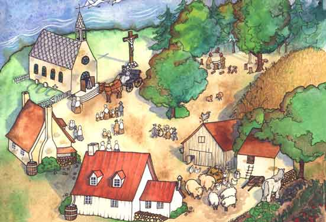

|


|
Jacques lived in several villages on the island of
Montréal, including
Saint-Laurent, Pierrefonds and Pointe-Claire.
Since we don't know his trade, we can't tell why he
moved around so much. But we are trying to learn more about
his
life and times and his
descendants.

|

What was the island
of Montréal like in Jacques's day? After the Great Peace of
1701, we can look at how Montréal developed...
read more
>>>

The Conquest was the
first revolution the Canadiens lived through; their lives were
turned upside down, often to their advantage. A generation went by,
and then came a second revolution, that of 1791... read
more >>>

The winds of the Enlightenment
blew in Canada too, but they came from England... read
more >>>
|